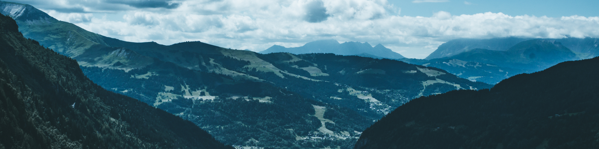
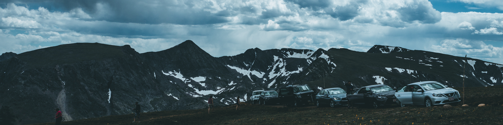
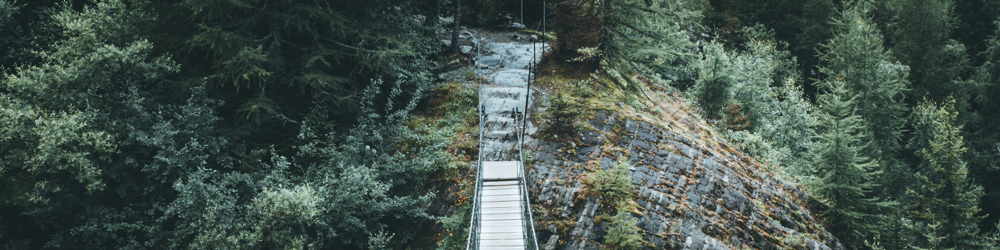
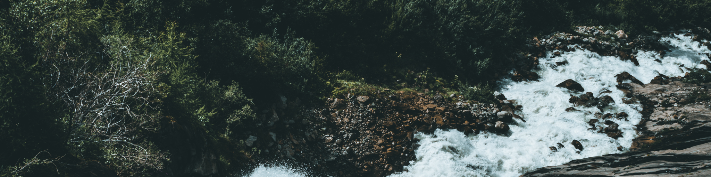

It all started with...
...camera. Back in 2013 or something I've started taking photos. Now, 4 years later, I consider photography one of my main passions. Somewhere around 2016 I've started shooting videos as well. My goal is to share the beauty and my vision of the world with others.

F.A.Q.
This is a short F.A.Q. for you not to ask typical questions.

Gear.
I shoot most of my photos and videos using Panasonic Lumix GH3 body, coupled with Helios 44-2 lens. Other than that, I use kit lens, which is Lumix 14-42mm f/3.5-5.6. I'm pretty happy with the result, so I won't switch or upgrade anything in the nearest future.

Editing Tools.
I edit all my photos using Adobe Lightroom and Photoshop. For video editing I use Adobe Premiere Pro. However, I also use a special tool called IWLTBAP LUT Generator to color grade my videos using Adobe Lightroom. It's a great tool and I can't recommend it enough!

Social Media.
You can find me on most social media platforms! Find me on Instagram, Flickr, Facebook, Twitter.